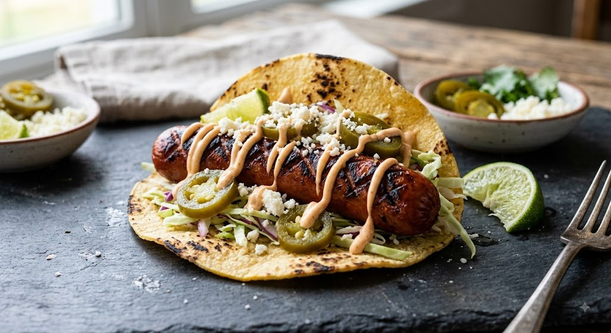

Course I · Monday
The Waiver Wire Special
Charred Whole Dog · Corn Tortilla · Chipotle Emulsion
Ingredients — Serves 2
- 4 all-beef hot dogs, left whole
- 6 GF corn tortillas
- ½ cup mayonnaise + 1–2 chipotles in adobo, blended smooth
- 1½ cups green cabbage, very thinly shaved
- ¼ cup pickled jalapeños
- 2 oz cotija cheese, crumbled
- 1 lime, cut into wedges
- Neutral oil, kosher salt
Preparation
01Heat a grill or cast iron skillet over high heat until smoking. Add a thin film of neutral oil if using a pan.
02Score each hot dog in a tight crosshatch pattern, cutting about ⅛-inch deep on all sides. This lets the fat render out and the surface curl and crisp as it cooks.
03Grill whole, turning every 60–90 seconds, until deeply charred and the scored cuts have opened up and blistered — about 6–8 minutes total.
04Warm tortillas directly over a gas flame or dry pan until lightly charred at the edges.
05Spread chipotle mayo on each tortilla. Lay one whole charred dog in each. Top with cabbage, jalapeños, cotija. Finish with an aggressive squeeze of lime and flaky salt.